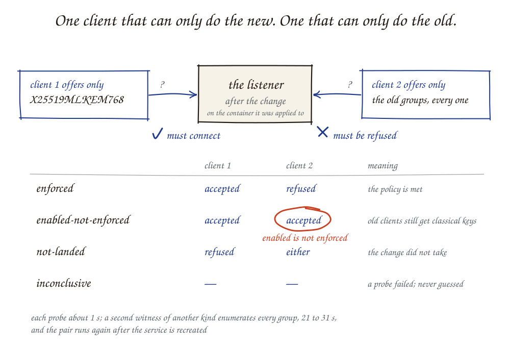
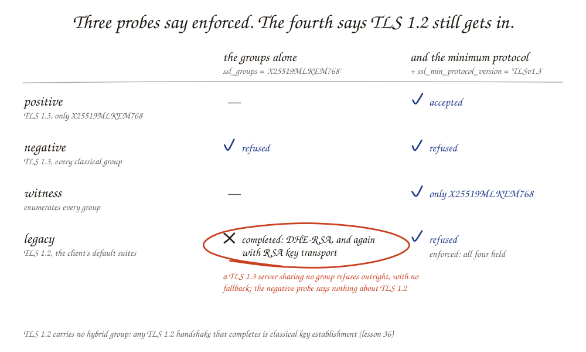

What does "verified" mean for a cryptographic change?¶
The answer¶
A cryptographic change is verified when the system's observable behaviour has changed in both directions: it now does the new thing, and it no longer does the old thing. For key establishment on a network listener that means a pair of probes. A client that offers only the new algorithm must connect. A client that offers only the old algorithms — every one of them, not just the ones the server used to be configured with — must be refused. If only the first holds, the new algorithm is enabled and the change is not finished.
Four more conditions make the result mean something: the probes ran after the change was applied; they reached the container the change was applied to; a second tool of a different kind agrees; and the result repeats after the service is restarted. No language model takes part.
The concept: enabled is not enforced¶
Key establishment is how two parties agree a session key. In TLS 1.3 the client offers a list of groups and the server picks one both support. A hybrid group such as X25519MLKEM768 runs a classical exchange (X25519) and a post-quantum key-encapsulation mechanism, or KEM (ML-KEM-768), together, so the session is protected if either holds.
Adding the hybrid group to a server's list changes nothing for a client that does not offer it. That client still negotiates a classical group, and its traffic can still be recorded today and decrypted once the classical exchange is broken. A scanner that offers the hybrid group will see it negotiated and report success. The server's posture toward every other client is unchanged.
So there are two different end states, and a verifier must tell them apart:
| State | Hybrid-only client | Classical-only client | Meaning |
|---|---|---|---|
enforced |
accepted | refused | The policy "key establishment must be quantum-resistant" is met |
enabled-not-enforced |
accepted | accepted | Modern clients are protected; a client that will not or cannot use the hybrid group is not |
not-landed |
refused | either | The change did not take effect |
inconclusive |
— | — | A probe failed, or the result cannot be trusted; never resolved by guessing |
enabled-not-enforced is a legitimate stage — it is how a migration avoids
breaking old clients — but it is not a pass against a policy that says
require.

The mechanism¶
The check is fixed before the change. A proposed change carries the check that will count: the target, the groups that must be accepted, the groups that must be refused, and whether the policy says enable or require. It is recorded before anything is applied, so success cannot be redefined afterward.
Three probes, and a fourth when the intent is require.
- Positive: one TLS 1.3 handshake offering only the groups that must be accepted.
- Negative: one handshake offering only the groups that must be refused, with any protocol version allowed.
- Witness: a tool of a different kind that enumerates the groups the
listener accepts, one handshake per group. Here the pair uses OpenSSL's
s_clientand the witness is testssl.sh. - Legacy, for require: one TLS 1.2 handshake with the client's default suites, which must be refused. The negative probe does not cover this. A TLS 1.3 server that shares no group with the client refuses it outright; it does not fall back to TLS 1.2. So a listener can refuse every classical-only TLS 1.3 client and still complete TLS 1.2 handshakes with finite-field Diffie-Hellman or RSA key transport, which TLS 1.2 negotiates with no group at all. TLS 1.2 cannot carry the hybrid group, so any TLS 1.2 handshake that completes is classical key establishment (lesson 36).

The pair samples; the witness enumerates. If the witness finds the
listener accepting any group that is not on the accept list, the status is at
most enabled-not-enforced, whatever the pair reported. If instead the
negative probe reports a key exchange the witness does not find accepted, the
two contradict each other and neither settles it: the verdict is
inconclusive, with the reason
(lesson 37).
For SSH the same shape. An OpenSSH 10 client offering only the ML-KEM
hybrid mlkem768x25519-sha256 must agree a key exchange; one offering every
other key exchange — including the NTRU Prime hybrid, which is not a FIPS
algorithm — must be refused; ssh-audit enumerates what the server offers. A
probe is judged by the key exchange the server agreed to, before any
authentication. SSH has no older protocol version to fall back to, so there
is no legacy probe.
A probe is judged by the group the server chose, not by whether the handshake completed. A server offered only one group may complete the handshake on another — a TLS 1.2 server falls back to finite-field Diffie-Hellman it chooses itself — and a client may abort after the server has already accepted the group it offered. The first is not acceptance of that group; the second is.
The verdict is bound to what was probed. Each probe records the container
that held the address while it ran and that container's image digest. The
verdict is inconclusive if that is not the container the change was applied
to, if the container changed during the probe, if any probe started before the
apply, or if the witness disagrees with the positive probe.
It is repeated. The service is recreated with nothing changed, and the check runs again. A change made to a running process, or to a file that is replaced on restart, passes the first check and fails the second.
A reader derives it again. The verdict is a record, and a record can be written wrongly. So the component that runs the probes keeps its own log of every job — what it was asked to offer, against which address, when, which container answered, and the hash of the raw output — where the verdict's writer cannot reach it. A reader accepts a verdict only when each probe it cites is, in that log, the job the check prescribes: the positive probe offered exactly the accept list, the negative exactly the refuse list; it started after the apply had finished, by the applier's own record; it reached the container the apply created; no other verdict cites it; and the raw output, parsed again, gives the result recorded and the status claimed. That a job exists in the log is not enough. A genuine job that offered one classical group, which the listener happened to refuse, is real evidence of the wrong question.
A change drafted by a model is proved on a copy first. For software the harness has no renderer for, a model drafts the change. The draft is then rehearsed: the runner starts a copy of the service, from the image the scope names, on an internal twin network with the proposed file, and the same check runs against the copy. Only a rehearsal that meets the intent opens the way to approval. The runner checks for it before applying, in the ledger and in its own log.
A change that cannot start is not left in place. If the service does not listen on the new configuration, the previous file is put back, the service is brought up on it, and the attempt is logged as failed. "The container started" is the orchestrator's statement; "the port answers" is the service's.
Worked example¶
On the four-service test estate, the portal's nginx listener was configured by hand, outside the harness, with:
The policy for this estate lists two classical groups, X25519 and P-256, because those are the ones the portal was built with. A check that refuses exactly those two gives:
| Probe | Offered | Result |
|---|---|---|
| Positive | X25519MLKEM768 | accepted |
| Negative | X25519, P-256 | refused |
| Witness | (enumerates) | accepts X25519MLKEM768 and secp384r1 |
Read by the pair alone, that is enforced. A client offering only P-384
connected immediately. The listener was hybrid-capable and still open to a
classical-only client; the probe had asked about the wrong two groups.
With the refuse list widened to every classical group OpenSSL 3.5 can offer in
TLS — X25519, X448, P-256, P-384, P-521, five finite-field groups and three
Brainpool curves — the negative probe negotiates secp384r1 and the verdict is
enabled-not-enforced, with secp384r1 named.
The same estate shows durability. A require change was applied through the
harness and verified enforced. The configuration file was then put back by
hand, and the service recreated: the repeated check returned not-landed, and
the change was recorded with durable: false.
Who a change shuts out: the compatibility matrix¶
enforced says the change landed: the old algorithm is refused. It does not
say whom that refuses. For an enable change the answer is no one; for a
require change it is every client that cannot offer the hybrid group, and
that is the decision a person is approving.
The workbench answers it before approval, by probe and with no model: one handshake per kind of client — post-quantum only, hybrid first with classical fallback, classical over TLS 1.3, TLS 1.2 only (and three kinds for SSH) — against the listener as deployed and against a copy started in the twin with the proposed file. Each cell is a probe record with its raw output and hash, and each row says what the change does to that client: shut out, let in, or unchanged.
For the records database's require change, the two clients that can offer
X25519MLKEM768 were served by both and negotiated it; the classical TLS 1.3
client and the TLS 1.2 client, each served X25519 today, were refused by the
copy. For the jump host's, a classical-only SSH client served
curve25519-sha256 today was refused. The kinds are profiles, not products:
what each offers is stated, so an owner maps their own clients onto them —
and where passive capture runs, it says which real clients fall in which kind
(note 05).
What follows¶
- Ask what a "PQC-enabled" report measured. A scan showing that an endpoint negotiates a hybrid group says the endpoint is capable. It does not say a classical-only client is refused. For harvest-now-decrypt-later exposure, only the second matters. OMB M-26-15 makes the same point: devices must be configurable "to use only acceptable algorithms".
- Define the refuse list by kind, not by configuration. "The groups we used to allow" is the wrong list. The right list is every group of the class being retired.
- Plan for the middle state. Moving a service from enable to require is a compatibility decision. The evidence for it is which real clients can still connect, which is a separate test.
- A verification has a cost. Here the enumerating witness is 21 to 31 s of each verdict and so nearly all of the time-to-change. That is the price of not trusting a sample.
Scope¶
Covered: key-establishment groups on one TLS 1.3 listener (nginx on OpenSSL 3.5), one server name, one port, on an x86_64 lab server.
Not covered: SSH key exchange (the check kind allows it; it has not been run); certificate and signature changes; whether named clients still connect; listeners that require a client certificate; UDP protocols; what a service offers when it connects out. One name on one port is probed: a second virtual host on the same listener is not. The verdict records the served certificate's fingerprint and compares it with nothing yet. A change that does not land stays applied; nothing rolls it back automatically.
The verdict event is written by the harness process from the runner's probe results. A reader checks it against the runner's own log and raw output, as above, and shows nothing as verified that the two do not bear out. That protects against a verdict written wrongly; it does not protect against a reader that is itself the compromised process. A verdict from before the runner logged its jobs cannot be checked and is shown as unchecked.
References¶
spec/interfaces.md, section 5 — the check, the verdict and the status table as specified.docs/fable-review/M0A-review.md, F-44 — the secp384r1 case as run.- ADR-0001, decision 5 — why verification is never a model's judgement.
- OMB M-26-15, Appendix A — enforcement against downgrade.
- FIPS 203 — ML-KEM, the KEM inside the hybrid group.
- Related: lesson 01, refuse every classical group; lesson 10, a group is accepted when it is negotiated; lesson 06, bind a scan to what it reached.